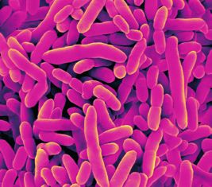
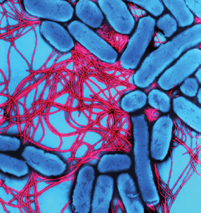
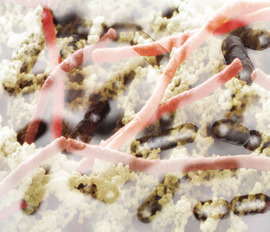
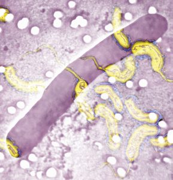

Bacterias y cianobacterias cumplen una importante función en los ecosistemas. Además, el ser humano las emplea en la producción de bienes y servicios.
Muchas bacterias descomponen la materia orgánica de cadáveres y restos de seres vivos y la convierten en materia inorgánica. Los organismos autótrofos pueden usar de nuevo esa materia inorgánica, por lo que las bacterias facilitan el reciclado de la materia en los ecosistemas.
El intestino de los mamíferos contiene bacterias simbióticas que protegen al organismo del crecimiento de nuevos microorganismos productores de enfermedades. A cambio de esta protección, el mamífero hospedador proporciona a las bacterias abundantes nutrientes.
Desde la prehistoria, los seres humanos se han servido de las bacterias para convertir el vino en vinagre o para transformar la leche en yogur o queso. En la actualidad, se utilizan también en la obtención de medicamentos, la depuración de aguas residuales o el control biológico de plagas.
Son muy pocas las bacterias patógenas. Estos microorganismos provocan infecciones en los seres humanos a través de heridas o mediante la ingestión de agua o alimentos contaminados. También pueden entrar en el aparato respiratorio a través de secreciones respiratorias de individuos enfermos. En ocasiones, el contagio se debe al contacto directo con otra persona, animal u objeto previamente contaminado.
